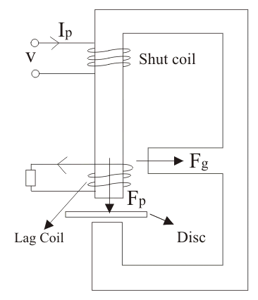
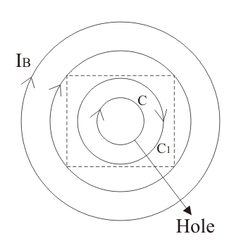

We know that in induction type energy meters, in order to maintain speed of rotation proportional to power "The phase angle between supply voltage and pressure coil flux should be equal to 90°". However in actual practice, the angle between supply voltage and pressure coil flux is exactly not 90 degrees but few degrees less. Therefore,some lag adjustment devices are used for adjustment of lag angle. Let us consider the figure given beside:

In the beside figure we have introduced anther coil which is located on the central limb with number of turns equal to N. This coil is called lag coil. When we give supply voltage to the pressure coil it produces flux F. Now this flux is divided into two parts Fp and Fg, Fp flux cuts the moving disc and also links with the lag coil. Due to lag coil there induces an emf El which lags behind the flux Fp by angle of 90°, also Il is lagging behind El by angle of 90°. The lagging coil produces a flux Fl. The resultant flux so obtained that cuts the moving disc is the combination of Fl and Fp. Now the resultant value this flux is in phase with resultant mmf of lag or shading coil and the resultant value of mmf of shading coil can adjusted by using two methods
(1) By adjusting electrical resistance.
(2) By adjusting shading bands.
Let us discuss these points in more detail:(1) Adjustment of coil resistance:
Lag Coil
If electrical resistance in the coil is high the electric current will be low and hence mmf of the coil decreases therefore the lag angle also decreases. So we have to decrease the resistance,and the resistance can be decreased by using thick wire in coils. So by adjusting electrical resistance we can indirectly adjust lag angle.
(2) By adjusting the shading bands up and down on the central limb we can adjust lag angle because when we move shading bands upward, then they embrace more flux hence the induced emf increases therefore mmf increases with increase in the value of lag angle. When we move shading bands downwards then it will embrace less flux hence the induced emf will decreases therefore mmf decreases with decrease in the value of lag angle. So by adjusting the position of shading bands we can adjust the lag angle.
Friction Compensation

In order to compensate friction forces we have to apply small force in the direction of rotation of disc. This applied force should be independent of load, so that the meter can read correctly at light load also. But over compensation of friction leads to creeping. Creeping may be defined as the continuous rotation of disc only by energizing the pressure coil while there is no electric current flowing through the electric current coil. In order to avoid creeping two holes are drilled, which are diametrically opposite to each other on the disc. Due to this, the effective circular eddy current path of the disc is distorted as shown in the figure. Also the centre of effective eddy current paths is shifted to C1 from C. Now C1 becomes the equivalent magnetic pole as produced by these eddy currents so the net force on the rotating disc, will tend to move C1 further away from the pole axis C. Thus disc will creep until the drilled hole reaches near the edge of pole, however further rotation of disc is opposed by opposite
torque which is produced by above mechanism.
Overload Compensation
Under load conditions the disc continuously moves. Therefore there induced an emf which is due to rotation called dynamically induced emf. Due to this emf the eddy currents are produced which interacts with the series magnetic field to produce breaking torque. Now this breaking torque is directly proportional to square of electric current hence it continuously increases and opposes the rotation of disc. In order to avoid the production of this self breaking torque, the full load speed of disc is kept as low as possible so that self breaking torque can be reduced. Errors in single phase energy meters:The errors caused by both the system (i.e. driving and braking) are separating written as follows:
Error caused by Driving System
(a) Error due to non symmetrical magnetic circuit:If the magnetic circuit is not symmetrical there produce a driving torque, due to which meter creep.
(b) Error due to wrong phase angle:If there is not a proper phase difference between the various phasors then it results in improper rotation of disc. Improper phase angle is due to improper lag adjustment, variation of resistance with temperature or it may be due to abnormal frequency of supply voltage.
(c) Error due to wrong magnitude of fluxes:There several reasons for wrong magnitude of fluxes out of these main reasons are abnormal values of electric current and voltage.
 by
by